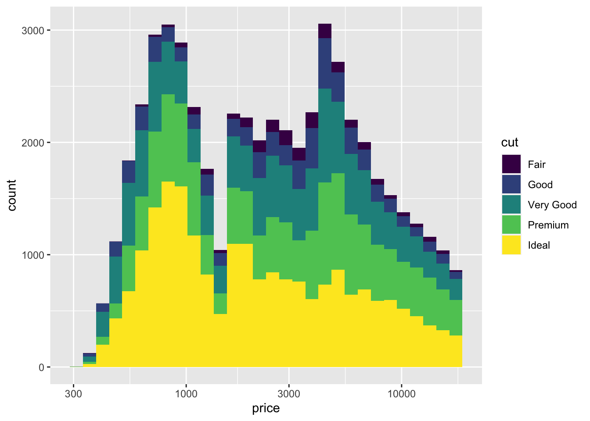
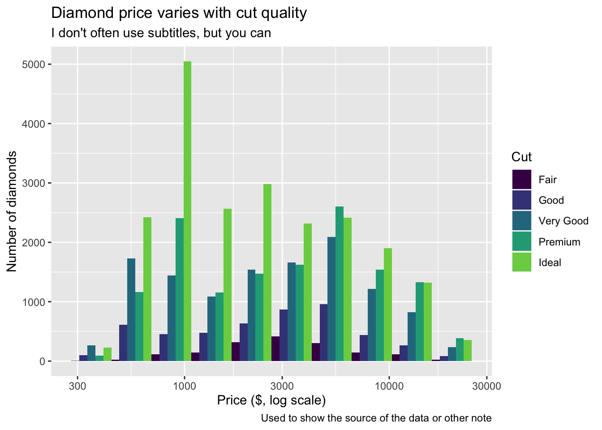

In this lesson I will demonstrate how to use R and ggplot2 to make visualizations using the ideas from the previous lesson. The emphasis is on the mechanics of making the visualizations. In time we will integrate the ideas about what features of visualizations work best to convey an idea that were introduced at the start of the course.
Your task for this lesson is to practice these skills by generating a series of graphs using different geometries and aesthetic mappings.
8.2 Introduction
By the end of this lesson you should understand how to make many different plots using ggplot. The mental model developed in the previous lesson will connect directly to the R commands in this lesson.
Incidentally, Hadley Wickham, who originally developed ggplot2 is from New Zealand and one consequence is that he allows for “British” and “American” spellings of some words. So you can use color or colour. In a future lesson when we summarize data you’ll see we can write summarize or summarise. If I switch back and forth, don’t get confused. Both are OK.
8.3 Data
We will use the diamonds dataset for examples in this lesson. As always, you should use str or View to take a look at the data to famiiarize yourself with the variables and the number of rows in the data before you begin to make a plot.
This is a large dataset, with over 50,000 rows. There are 7 quantiative variables and three categorical variables. Read the help page on the dataset to learn more.
8.4 Aesthetic mappings and geometries
We usually pick the aesthetic mappings once we’ve thought about what geometry we want to use. The goal of this lesson will be to demonstrate some of the basics: histogram, box plot, and scatter plot. For a survey of other common geometries, consult [Wilke, chapter 5]](https://clauswilke.com/dataviz/directory-of-visualizations.html). Even these three kinds give us lots of room to show of the power of the grammar of graphics.
8.5 Histogram
Let’s draw a histogram of the price of diamonds in the dataset. We map price to the x axis and request the histogram geometry.
diamonds |>ggplot(aes(x=price)) +geom_histogram()
`stat_bin()` using `bins = 30`. Pick better value with `binwidth`.
This is very skewed distribution – with lots more observations at the low end of the price range.
Maybe one of the categorical features will help us see features in the data. Let’s break the bars down by cut using colour.
`stat_bin()` using `bins = 30`. Pick better value with `binwidth`.

Stacked bar graphs like this are interesting, but they can be hard to read. Is the distribution the same for all the cuts? Or are there more Premium and Very Good cuts for the more expensive diamonds? Let’s try a few different ways to split the histogram.
We can modify the geometry by modifing the histogram geom. It’s helpful to have fewer bars in this histogram, so I’ve set the number of bars to 10 using bins=10.
The peak for Ideal is definitely at a lower price than the peak for Premium or Very Good.
8.6 Box plots
Box plots are useful for showing distributions too. You can draw a box plot with one quantitative variable, or with a quantitative variable and a categorical variable. You can use either x or y for the quantitative variable. A plot with too many colours is hard to read, but we can interpret lots of side-by-side boxplots. So I’ll switch to clarity for the categorical variable.
diamonds |>ggplot(aes(x = price, y = clarity)) +geom_boxplot()
As before the distributions are skewed, so let’s use the log transform again. Notice how similar the code is to the boxplots.
diamonds |>ggplot(aes(x = price, y = clarity)) +geom_boxplot() +scale_x_log10()
If you are willing to read a complex plot, you can fill the boxes using cut. (Try color= instead of fill= to compare the two ways of using colour.) This figure is probably too complicated to show someone else, but might be useful as an exploratory plot to see a lot of information in a small space. Think of it – this is a summary of over 50,000 prices across two cateogorical variables with 5 x 8 = 40 different combinations!
For our third geom, we will use geom_point to make a scatter plot. Just knowing that you can probably create the plot below by modifying the code above. In the code below, I changed geom_boxplot to geom_point, changed fill to color and changed clarity to carat to have a second quantative variable on the y axis.
That’s too many points on a scatter plot! There are a few tricks you can use, like making the points smaller and making them partly transparent – but they don’t really help with this much data.
What to do? Let’s create a histogram with two quantitative variables, and show the height of each bar using color.
diamonds |>ggplot(aes(x = price, y = carat)) +geom_bin2d() +scale_x_log10()
Accurate quantitative assessment is hard to make (basically impossible) with colour brightness, but you can see the price and carat combinations for most of the diamonds. We had to give up using colour for clarity. We’ll return to this data when we talk about facets in a future lesson to see how we can add in one more categorical variable.
We can do a little better with a contour plot instead of colours. You can even add color=cut back in if you like. Try geom_density_2d_filled for an interesting variant.
diamonds |>ggplot(aes(x = price, y = carat)) +geom_density_2d() +scale_x_log10()
8.8.1 Statistics
We said that in addition to connecting variables to aesthetic features, we could use statistical transformations to create new derived variables for our plots. So let’s try that!
Instead of plotting a point for each diamond in the dataset, let’s compute averages and standard errors for all the diamonds group by clarity.
diamonds |>ggplot(aes(x = price, y = clarity)) +stat_summary(fun.data ="mean_se") +scale_x_log10()
Now adding a colour for each cut doesn’t make the plot too complicated.
Most of the stat_ functions are directly linked to geom_ functions, but a few like stat_summary or stat_unique are handy on their own.
8.9 Scales
We’ve seen how scales can be used to transform the x axis, but there is a lot more we can do.
First, we can set the limits of the axis anywhere we want, to highlight some values or expand the range. (Maybe we have a very specific price range in mind for our data analysis.)
This is an example of using the power of ggplot and accidentally shooting your own (data) foot off. The data outside this x range were discarded before the mean and standard error were computed! We got a warning, but it was hard to understand! So this is dangerous with summary statistics. (Another reason we will learn to summarize data on our own in a future lesson.)
It’s perfectly safe with raw unsummarized data. We still get a warning, but all the dots shown are untransformed, so we don’t need to wonder if the axis limits were set before or after transforming the data.
The viridis colour scale is supposed to be colour-blind friendly and to translate well when printed in gray scale on paper. It’s a range of colours selected between two extremes. Experiment with different values for begin and end between 0 and 1.
8.10 Annotations
The most important annotations are labels for the axes, guides for colours and shapes, and the title, subtitle, and caption. Here’s an example showing how to change each one using the labs (for labels) function.
diamonds |>ggplot(aes(x=price, fill=cut)) +scale_x_log10() +geom_histogram(bins =10, position="dodge") +scale_fill_viridis_d(begin =0.0, end =0.8) +labs(x ="Price ($, log scale)",y ="Number of diamonds",fill ="Cut",title ="Diamond price varies with cut quality",subtitle ="I don't often use subtitles, but you can",caption ="For the source of the data or other note")

Another kind of annotation adds text to a figure. It’s called an annotation instead of a geom because the annotation is a custom thing you add that doesn’t come from the data. Sometimes this is a corporate branding graphic. Or a cartoon reminding the reader what the data are about. Here I’ll add a text message.
diamonds |>ggplot(aes(x=price, fill=cut)) +scale_x_log10() +geom_histogram(bins =10, position="dodge") +annotate(geom="text", x =1300, y =4500, label ="Compare the peaks for\nIdeal and Good.",hjust =0, vjust =0.5, size =5)
You can add annotations in the shape of points or arrows too.
A better way to annotate is to create a data frame with x and y locations and a label. Here I’ll find the average price and carat for each combination of cut and clarity, use colour for cut and add a text label for clarity. We’ll learn more about summarizing data later, so feel free to skip over the calculation and focus on the plotting for now.
s <- diamonds |>group_by(cut, clarity) |>summarize(price =mean(price), carat =mean(carat))
`summarise()` has grouped output by 'cut'. You can override using the `.groups`
argument.
s |>ggplot(aes(x= price, y = carat, color = cut)) +scale_x_log10() +geom_point() +geom_text(aes(label = clarity ))
There’s a few problems with that graph! The labels are coloured too. The color scale for “cut” looks strange. The text labels are on top of the points.
The colour of the labels comes from the inheritance of the aesthetics. It’s easy to fix. Only map clarity to a colour in the geom_point.
s |>ggplot(aes(x= price, y = carat)) +scale_x_log10() +geom_point(aes(color=cut)) +geom_text(aes(label = clarity ))
A simple change makes a huge difference.
We can use geom_text_repel from the ggrepel package to fix the placement of the labels. I’ll shrink the size of the text a bit too.
There are too many labels on the plot so it’s not a good final visualization, but it demonstrates how to add labels and make a plot that might be very useful for you as you explore a dataset.
8.11 Theme
The theme allows you to set text font and size for labels and numbers on scale, line thicknesses for axes and ticks, position of the guides and many other features. You can also use predefined themes created by others. Here are a few examples that I find useful as an introduction to this topic.
My favourite gets rid of the gray background.
s |>ggplot(aes(x= price, y = carat, color = cut)) +scale_x_log10() +geom_point() +theme_bw()
Second favourite makes the text larger for all elements.
s |>ggplot(aes(x= price, y = carat, color = cut)) +scale_x_log10() +geom_point() +theme_bw() +theme(text =element_text(size=20))
If you have room you can put the guide inside the plot. The coordinates range from 0 to 1 on both scales from left to right and bottom to top.
s |>ggplot(aes(x= price, y = carat, color = cut)) +scale_x_log10() +geom_point() +theme_bw() +theme(text =element_text(size=20),legend.position =c(0.15,0.75))